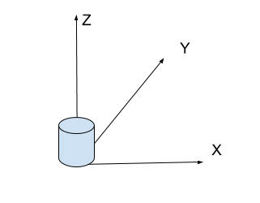
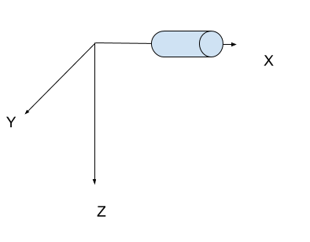
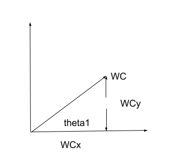
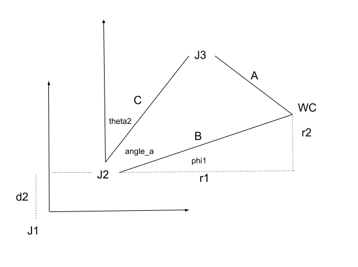
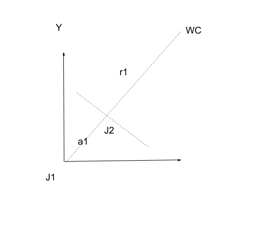
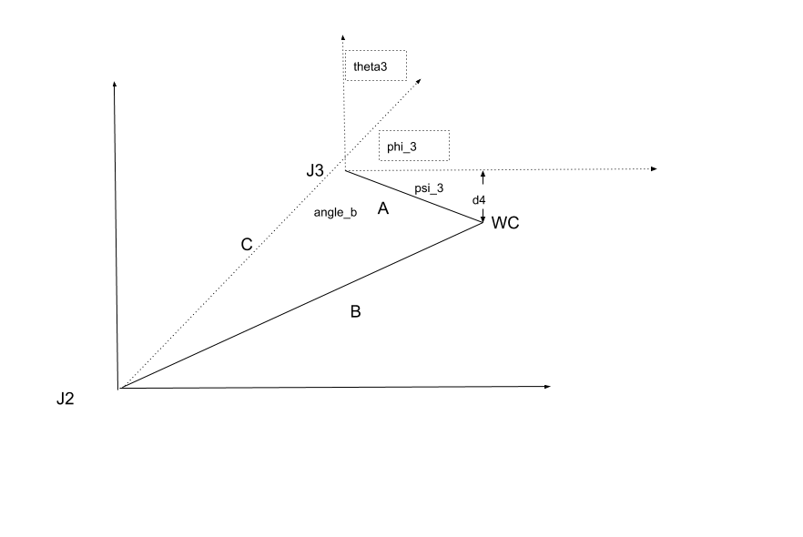
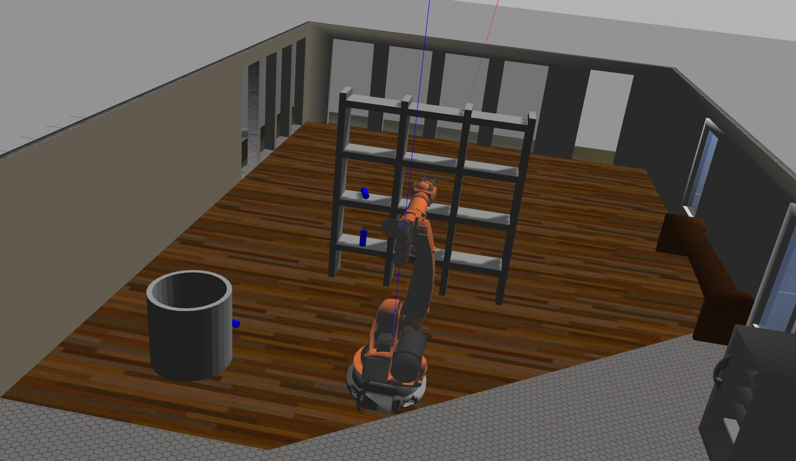
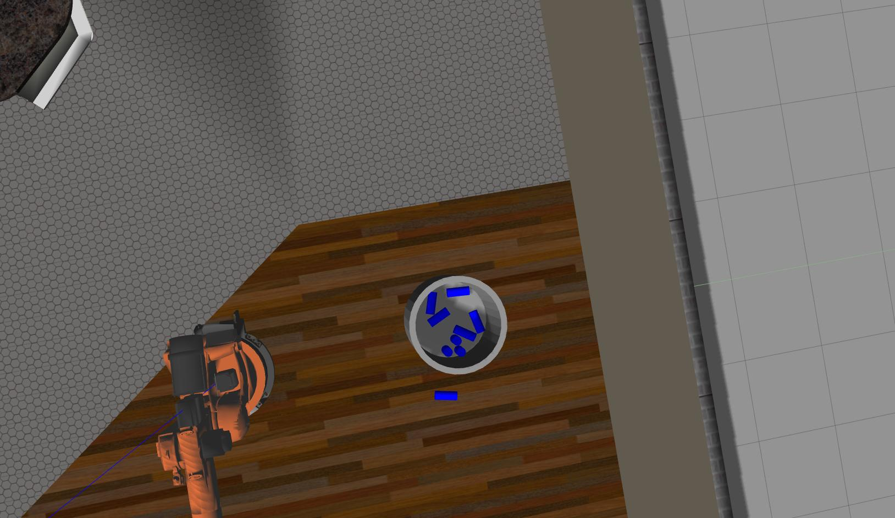

Steps to complete the project:
IK_server.py
with your Inverse Kinematics code.
You’re reading it!
We follow the rules for generating the DH parameters. The urdf indicates joint1 has a z offset of 0.33 and joint2 has a z offset of 0.42 and an x offset of 0.35. We move the joint1 origin to the accumulated z to provide a d1 of 0.75. We then twist the joint -90deg and translate 0.35 along the x axis resulting in alpha1=-pi/2 and a1=0.35, d2=0. We translate along the z axis 1.25 to reach joint3 with no rotation. Joints 4,5,6 are will have a coincident origin as they form the spherical wrist. We rotate -pi/2 to orient in the joint4 configuration and apply a translation of 0.96 + 0.54 for d4 and a3 has an offset of -0.054. A twist of +pi/2 moves from joint4 to joint5. A final twist of -pi/2 moves from joint5 to joint6. Finally, the end effector has d7 of 0.193 + 0.11 or 0.303 from the urdf.
| Links | alpha(i-1) | a(i-1) | d(i-1) | theta(i) |
|---|---|---|---|---|
| 0->1 | 0 | 0 | 0.75 | 0 |
| 1->2 | - pi/2 | 0.35 | 0 | -pi/2 + q2 |
| 2->3 | 0 | 1.25 | 0 | 0 |
| 3->4 | -pi/2 | -0.054 | 1.50 | 0 |
| 4->5 | pi/2 | 0 | 0 | 0 |
| 5->6 | -pi/2 | 0 | 0 | 0 |
| 6->EE | 0 | 0 | 0.303 | 0 |
The generic transform looks like
For the T 0,1 matrix we substitute alpha_ 0 =0, a 0 =0,d 1 =0.75 noting that cos(0) = 1 and sin(0) = 0 yields
For the T 1,2 matrix we substitute alpha 1 =-pi/2, a 1 =0.35,d 2 =0 noting that cos(-pi/2) = 0 and sin(-pi/2) = -1 yields
For the T 2,3 matrix we substitute alpha 2 =-0, a 2 =1.25,d 3 =0 noting that cos(0) = 1 and sin(0) = 0 yields
For the T 3,4 matrix we substitute alpha 3 =-pi/2, a 3 =-0.054,d 4 =1.50 noting that cos(-pi/2) = 0 and sin(-pi/2) = -1 yields
For the T 4,5 matrix we substitute alpha 4 =pi/2, a 4 =0,d 5 =0 noting that cos(pi/2) = 0 and sin(pi/2) = 1 yields
For the T 5,6 matrix we substitute alpha 5 =-pi/2, a 5 =0,d 6 =0 noting that cos(-pi/2) = 0 and sin(-pi/2) = -1 yields
For the T 6,G matrix we substitute alpha 6 = 0, a 6 =0,d 7 =0.303 noting that cos(0) = 1 and sin(0) = 0 yields
The transform from the base link to the end effector is then
The input into the system is the roll, pitch, and yaw of the end effector. We will transform the rotations about the end effector into the total rotation required from the origin of our robot. Here is the coordinate frame of our system:

and here is the coordinate frame of the end effector:

To transform the orientation of our world frame into that of the input end effector rotations, we need to rotate 180 degrees about the z axis to get the coordinate frames equivalent. Additionally, a rotation of -90 degrees about the y axis is required from the base revolute joint such that the normal is in the direction of the end effector frame. We call this matrix
We define a sequence of extrinsic rotations in order to calculate the end effector rotation.
The rotations about
where
r
is the input roll.
where
p
is the input pitch.
where
y
is the input yaw.
at this point we have
where the
n
vector may be extracted from the just calculated
We solve the inverse kinematics problem by considering the first three joints as those that resolve the place the wrist center in the correct position and the last three joints are those that specify the orientation of the end effector. We will start by solving for theta1, which happens to be the only joint to provide any rotation about the z axis. We start by taking a top-down view of the robot in order to calculate the required rotation about z in order to calculate theta1.

From here it is easy to solve for theta1.
Next up, we move to theta2 and we will start with a side-view.

From this drawing we can see that
Furthermore we can see that
and from the law of cosines
Some of these components are immediately solvable:
and extracted from the DH table is
to solve for B and r1 requires we return to the top view.

In this coordinate frame we see that r1 is now the remaining distance to the wrist center from joint1 once the length of a1 has been subtracted.
and now all required elements to solve for theta2 have been resolved.
We advance to joint3 to solve for theta3 in a similar manner.

From this drawing we can see that
meanwhile we can see that
or
and
where d4 is from the table and A was previously resolved.
resulting in
We an solve angle_b from the law of cosines
and all unknowns are now resolved for theta3. However, the sign of theta3 needs to be inverted to reflect the negative rotation. This completes the inverse kinematics code for position determination.
We now move to the inverse kinematics of the orientation of the spherical wrist. First, we already have the total orientation required and we know the orientation applied to the end effector by the first three joints. So, we will first solve for the required orientation applied by the spherical wrist alone.
where
Here we just applied the homogenous transforms using the solved rotational angles for the first three joints to find the total orientation contribution of the first three joints. Therefore, we have also found the total orientation contribution required by the last three joints and the problem is to now solve for the angles on each of the last three joints.
The transform from joint3 to the wrist center is:
to make the matrix multiplications less daunting we will write “c4” to mean cos(theta4) and “s4” to mean sin(theta4).
theta5 could be easily plucked out of the T3_6[1,2] entry but the guidance is to use the tangent allowing for the specification of quadrants. Observe:
then
leading to
theta4 and theta6 are easier to resolve as
and all angles have now been resolved. The inverse kinematics problem is complete.
IK_server.py
file with properly commented python code for calculating Inverse Kinematics based on previously performed Kinematic Analysis. Your code must guide the robot to successfully complete 8/10 pick and place cycles. Briefly discuss the code you implemented and your results.
The result of this implementation was 8/10 successes. These results can be seen in the following two images.


The first image shows a target object that has fallen on its side and the second image shows one target object not in the bin. The reason behind the second failure is that the robot did not account for the length of the target while orienting into the bin. The result was that the target hit the side of the bin during one of the manuevers moving the bin and the target fell to the ground. The first failure was a similar result. The arm hit the target during orientation - before the grasping stage. Both of these could be accounted for but are difficult to consider in this scenario where we are given the required pose but not the contextual information such as “am I already holding the target”.